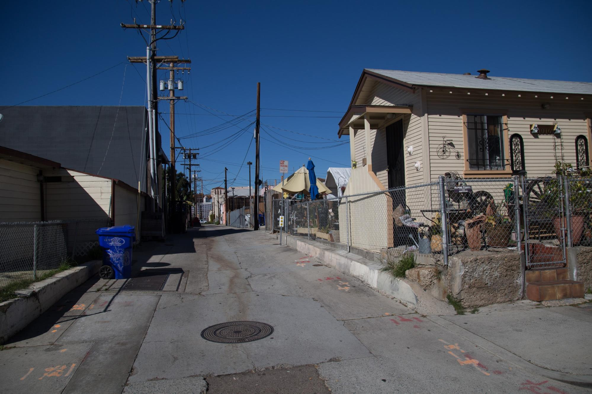

Summary: Public transit for most low-income groups is the only form of affordable transportation available to commute either across the city or within the neighbourhood for work, school or healthcare. Inefficient public transport can mean having to wait in long lines for a bus that arrives only once an hour, walking for over 15 minutes from school or work to the nearest bus stop, or having to change several buses in order to reach a hospital that is only a few miles away. All these inefficiencies poorly affect the daily lives of commuters because their health and their livelihood both largely depend on the efficiency and availability of public transport.

Last week I decided to visit Barrio Logan by myself. With no access to a car, I was prepared to spend twice as long using only public transport to get from UCSD to the neighbourhood. What I did not expect however, is having to change 3 different MTS lines to get there. One bus and two trolley stations later I was still a 20 minute walk away from chicano park, my final destination.
Although UCSD or its surrounding La Jolla neighbourhood may not seem a top priority for Barrio Logan residents to visit, consider that many major hospitals are concentrated in this region.
“A day’s trip” was the term that a teacher from a local charter school used to describe the public transport commute from Barrio Logan to any major hospital. As he continued to describe this arduous journey, the hospital began sounding more like a luxury than a necessity to me, due to the lack of efficient public transport. “A day’s trip” is costly in terms of time to both the child whose sickness may worsen, and the parent who must forego their pay for the day. Especially considering the recent lead poisoning incidents at schools in the area and the chemical pollutants that result from the nearby industries, the barrio’s citizens should not be forced to choose between their immediate health and their livelihood. As vital amenities such as hospitals and schools begin to move further away from older residential areas like Barrio Logan, it is important to introduce a reliable system of transportation to promote accessibility for everyone.
The barrio’s residents rely on affordable public transport not only for medical emergencies but also for their daily commute to and from work or school. In the figure below, an MTS survey reveals that the trolley and bus station at Barrio Logan is one of the most widely used in the city.

A graphic of a survey conducted by MTS to find the usership of public transport.
Its increased dependence on the public transport system has made Barrio Logan the immediate victim of the poor coupling between a growing city and an inefficient public transport system. Due to the large number of public transport users from the neighbourhood, it would be in the best interest of both MTS and the local communities to introduce newer and more efficient bus routes both within the neighbourhood and to other parts of the city.
We at IHPSD propose a survey that would analyse the most important and highly frequented locations as deemed by the barrio’s locals. Using this information, we can re-navigate the existing bus route (which simply cuts a straight line through the neighbourhood) or suggest a completely new bus route exclusively created to address the neighbourhood’s needs. A solution to connecting Barrio Logan’s residents to remote hospitals is the introduction of a “rapid MTS” bus route, one that makes no stops between the beginning of the route at Barrio Logan and the end at a nearby cluster of hospitals. In the past, this solution has been implemented for the benefit of UCSD college students, and has worked greatly in improving both usership of public transport and the efficiency of students’ commute. To facilitate the creation of a bus line, a survey must first be conducted in order to hear from the residents of the neighbourhood themselves what they consider key locations that ought to be connected. It would also require significant mapping of routes to ensure efficiency and maximum utility by patients in need, and proposed routes must be approved by both the residents and the MTS. A more short term solution may include having volunteer drivers (students from UCSD) that can act as shuttles between free health organisations at Barrio Logan and nearby major hospitals.
Another important aspect of public transport is its strategic implementation to curb the excessive usage of private vehicles. This is not only better for the surrounding environment, but it may also improve safety in certain locations. For example, the implementation of a trolley stop or a bus stop near central Barrio Logan (Chicano Park, Mercado Square) would greatly decrease vehicular traffic in those areas. Since these areas are frequented by many children and families, this would greatly contribute to their safety. Currently, bus stops and trolley stops in Barrio Logan exist largely on the periphery of the neighbourhood. For example, the harborside trolley stop is surrounded only by the naval shipyard and a parking lot. It is thus limited in its utility to the barrio’s residents and also in terms of reducing vehicular traffic.

The view from the Harborside Trolley stop, the only trolley stop within Barrio Logan.
A new plan needs to be made to change the location of the current trolley stop or to change the space around the stop. An interesting model to draw inspiration from is the “transport oriented development” (TOD) model. The “TOD” promotes greater implementation of public transport infrastructure and pedestrian or cyclist zones in order to reduce our dependence on cars and consequently to reduce the pollution in our environment and promote better health and exercise. Making space for a children’s park or a plaza that is pedestrian friendly would encourage usership of the trolley. Furthermore, it would help create a barrier between the heavy industry and the residential area of the neighbourhood. This would not only improve the air quality in the barrio but also allow children to feel safe walking on streets that may otherwise be occupied by large cargo vehicles. I think the creation of more public space would be particularly successful in the barrio as it truly promotes a sense of community in the face of inhospitable surrounding industries which may otherwise force people and children to remain indoors.
An audio interview of a resident of Barrio Logan describing the personal struggles he faces due to limited accessibility to hospitals and areas of work from Barrio Logan.

Turning alleys such as these into more pedestrian friendly walkways can be a good starting point for the implementation of the TOD model.
Whether it be improving the accessibility and efficiency of the current bus and trolley routes, or promoting a pedestrian-friendly neighborhood plan to reduce vehicular traffic and pollution, one this is certain: the city needs to heed the voices of the community and work hand in hand to implement public transit that best serves the city.
Extra Information:
http://www.voiceofsandiego.org/2013/09/16/everything-you-need-to-know-about-the-barrio-logan-community-plan/
https://www.sdmts.com/sites/default/files/attachments/commreport-web1.pdf